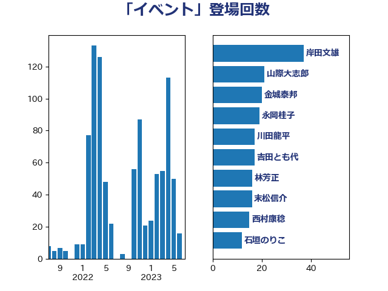

単語「イベント」

| 岸田文雄 | 自由民主党 | 37 回 |
| 山際大志郎 | 自由民主党 | 21 回 |
| 金城泰邦 | 公明党 | 20 回 |
| 永岡桂子 | 自由民主党 | 19 回 |
| 川田龍平 | 立憲民主党 | 17 回 |
| 吉田とも代 | 日本維新の会 | 17 回 |
| 林芳正 | 自由民主党 | 16 回 |
| 末松信介 | 自由民主党 | 16 回 |
| 西村康稔 | 自由民主党 | 15 回 |
| 石垣のりこ | 立憲民主党 | 12 回 |
| 萩生田光一 | 自由民主党 | 11 回 |
| 若宮健嗣 | 自由民主党 | 10 回 |
| 柚木道義 | 立憲民主党 | 10 回 |
| 森山浩行 | 立憲民主党 | 9 回 |
| 米山隆一 | 立憲民主党 | 8 回 |
| 浮島智子 | 公明党 | 8 回 |
| 斉藤鉄夫 | 公明党 | 7 回 |
| 後藤茂之 | 自由民主党 | 7 回 |
| 齋藤健 | 自由民主党 | 6 回 |
| 山本剛正 | 日本維新の会 | 6 回 |
| 山崎誠 | 立憲民主党 | 6 回 |
| 山井和則 | 立憲民主党 | 6 回 |
| 西村明宏 | 自由民主党 | 5 回 |
| 蓮舫 | 立憲民主党 | 5 回 |
| 秋葉賢也 | 自由民主党 | 5 回 |
| 石川大我 | 立憲民主党 | 5 回 |
| 梅村聡 | 日本維新の会 | 5 回 |
| 打越さく良 | 立憲民主党 | 5 回 |
| 後藤祐一 | 立憲民主党 | 5 回 |
| 岡田直樹 | 自由民主党 | 5 回 |
| 山下貴司 | 自由民主党 | 5 回 |
| 小熊慎司 | 立憲民主党 | 5 回 |
| 小倉將信 | 自由民主党 | 5 回 |
| 高木かおり | 日本維新の会 | 4 回 |
| 馬場伸幸 | 日本維新の会 | 4 回 |
| 西村智奈美 | 立憲民主党 | 4 回 |
| 石井章 | 日本維新の会 | 4 回 |
| 白石洋一 | 立憲民主党 | 4 回 |
| 田中健 | 国民民主党 | 4 回 |
| 牧原秀樹 | 自由民主党 | 4 回 |
| 源馬謙太郎 | 立憲民主党 | 4 回 |
| 渡辺博道 | 自由民主党 | 4 回 |
| 河野太郎 | 自由民主党 | 4 回 |
| 森田俊和 | 立憲民主党 | 4 回 |
| 松野博一 | 自由民主党 | 4 回 |
| 早稲田ゆき | 立憲民主党 | 4 回 |
| 山田賢司 | 自由民主党 | 4 回 |
| 小西洋之 | 立憲民主党 | 4 回 |
| 井坂信彦 | 立憲民主党 | 4 回 |
| 鰐淵洋子 | 公明党 | 3 回 |
| 須藤元気 | 無所属 | 3 回 |
| 長友慎治 | 国民民主党 | 3 回 |
| 野田聖子 | 自由民主党 | 3 回 |
| 舩後靖彦 | れいわ新選組 | 3 回 |
| 田村憲久 | 自由民主党 | 3 回 |
| 浅野哲 | 国民民主党 | 3 回 |
| 江島潔 | 自由民主党 | 3 回 |
| 横沢高徳 | 立憲民主党 | 3 回 |
| 横山信一 | 公明党 | 3 回 |
| 柳ヶ瀬裕文 | 日本維新の会 | 3 回 |
| 木村英子 | れいわ新選組 | 3 回 |
| 徳永エリ | 立憲民主党 | 3 回 |
| 山添拓 | 日本共産党 | 3 回 |
| 山本博司 | 公明党 | 3 回 |
| 寺田学 | 立憲民主党 | 3 回 |
| 安江伸夫 | 公明党 | 3 回 |
| 大西健介 | 立憲民主党 | 3 回 |
| 塩村あやか | 立憲民主党 | 3 回 |
| 塩川鉄也 | 日本共産党 | 3 回 |
| 堀場幸子 | 日本維新の会 | 3 回 |
| 吉良よし子 | 日本共産党 | 3 回 |
| 倉林明子 | 日本共産党 | 3 回 |
| 中条きよし | 日本維新の会 | 3 回 |
| 黄川田仁志 | 自由民主党 | 2 回 |
| 音喜多駿 | 日本維新の会 | 2 回 |
| 鈴木義弘 | 国民民主党 | 2 回 |
| 鈴木宗男 | 日本維新の会 | 2 回 |
| 金子俊平 | 自由民主党 | 2 回 |
| 野田国義 | 立憲民主党 | 2 回 |
| 野村哲郎 | 自由民主党 | 2 回 |
| 赤木正幸 | 日本維新の会 | 2 回 |
| 西岡秀子 | 国民民主党 | 2 回 |
| 葉梨康弘 | 自由民主党 | 2 回 |
| 羽田次郎 | 立憲民主党 | 2 回 |
| 竹内真二 | 公明党 | 2 回 |
| 福重隆浩 | 公明党 | 2 回 |
| 石川香織 | 立憲民主党 | 2 回 |
| 石井正弘 | 自由民主党 | 2 回 |
| 田畑裕明 | 自由民主党 | 2 回 |
| 田名部匡代 | 立憲民主党 | 2 回 |
| 猪瀬直樹 | 日本維新の会 | 2 回 |
| 浜地雅一 | 公明党 | 2 回 |
| 比嘉奈津美 | 自由民主党 | 2 回 |
| 榛葉賀津也 | 国民民主党 | 2 回 |
| 柴田巧 | 日本維新の会 | 2 回 |
| 松野明美 | 日本維新の会 | 2 回 |
| 杉本和巳 | 日本維新の会 | 2 回 |
| 本村伸子 | 日本共産党 | 2 回 |
| 朝日健太郎 | 自由民主党 | 2 回 |
| 日下正喜 | 公明党 | 2 回 |
| 市村浩一郎 | 日本維新の会 | 2 回 |
| 小林鷹之 | 自由民主党 | 2 回 |
| 坂本祐之輔 | 立憲民主党 | 2 回 |
| 吉川元 | 立憲民主党 | 2 回 |
| 古川禎久 | 自由民主党 | 2 回 |
| 勝目康 | 自由民主党 | 2 回 |
| 加藤勝信 | 自由民主党 | 2 回 |
| 佐藤英道 | 公明党 | 2 回 |
| 丸川珠代 | 自由民主党 | 2 回 |
| 中野英幸 | 自由民主党 | 2 回 |
| 上月良祐 | 自由民主党 | 2 回 |
| 三浦信祐 | 公明党 | 2 回 |
| 三宅伸吾 | 自由民主党 | 2 回 |
| おおつき紅葉 | 立憲民主党 | 2 回 |
| 鶴保庸介 | 自由民主党 | 1 回 |
| 高見康裕 | 自由民主党 | 1 回 |
| 高良鉄美 | 無所属 | 1 回 |
| 高橋千鶴子 | 日本共産党 | 1 回 |
| 高橋光男 | 公明党 | 1 回 |
| 高橋はるみ | 自由民主党 | 1 回 |
| 高木陽介 | 公明党 | 1 回 |
| 馬場雄基 | 立憲民主党 | 1 回 |
| 青柳仁士 | 日本維新の会 | 1 回 |
| 青木愛 | 立憲民主党 | 1 回 |
| 長浜博行 | 無所属 | 1 回 |
| 長峯誠 | 自由民主党 | 1 回 |
| 長妻昭 | 立憲民主党 | 1 回 |
| 金村龍那 | 日本維新の会 | 1 回 |
| 金子恵美 | 立憲民主党 | 1 回 |
| 野中厚 | 自由民主党 | 1 回 |
| 遠藤良太 | 日本維新の会 | 1 回 |
| 近藤和也 | 立憲民主党 | 1 回 |
| 輿水恵一 | 公明党 | 1 回 |
| 豊田俊郎 | 自由民主党 | 1 回 |
| 谷川とむ | 自由民主党 | 1 回 |
| 谷合正明 | 公明党 | 1 回 |
| 角田秀穂 | 公明党 | 1 回 |
| 西野太亮 | 自由民主党 | 1 回 |
| 藤木眞也 | 自由民主党 | 1 回 |
| 藤巻健太 | 日本維新の会 | 1 回 |
| 藤岡隆雄 | 立憲民主党 | 1 回 |
| 荒井優 | 立憲民主党 | 1 回 |
| 芳賀道也 | 国民民主党 | 1 回 |
| 細田健一 | 自由民主党 | 1 回 |
| 簗和生 | 自由民主党 | 1 回 |
| 笠井亮 | 日本共産党 | 1 回 |
| 穀田恵二 | 日本共産党 | 1 回 |
| 福島伸享 | 無所属 | 1 回 |
| 神田潤一 | 自由民主党 | 1 回 |
| 石川博崇 | 公明党 | 1 回 |
| 石原宏高 | 自由民主党 | 1 回 |
| 石井拓 | 自由民主党 | 1 回 |
| 玉木雄一郎 | 国民民主党 | 1 回 |
| 牧義夫 | 立憲民主党 | 1 回 |
| 片山大介 | 日本維新の会 | 1 回 |
| 片山さつき | 自由民主党 | 1 回 |
| 熊谷裕人 | 立憲民主党 | 1 回 |
| 漆間譲司 | 日本維新の会 | 1 回 |
| 渡辺創 | 立憲民主党 | 1 回 |
| 清水真人 | 自由民主党 | 1 回 |
| 浜田靖一 | 自由民主党 | 1 回 |
| 浅田均 | 日本維新の会 | 1 回 |
| 泉健太 | 立憲民主党 | 1 回 |
| 沢田良 | 日本維新の会 | 1 回 |
| 池畑浩太朗 | 日本維新の会 | 1 回 |
| 水野素子 | 立憲民主党 | 1 回 |
| 武部新 | 自由民主党 | 1 回 |
| 武見敬三 | 自由民主党 | 1 回 |
| 武井俊輔 | 自由民主党 | 1 回 |
| 梅谷守 | 立憲民主党 | 1 回 |
| 梅村みずほ | 日本維新の会 | 1 回 |
| 柳本顕 | 自由民主党 | 1 回 |
| 枝野幸男 | 立憲民主党 | 1 回 |
| 松沢成文 | 日本維新の会 | 1 回 |
| 杉尾秀哉 | 立憲民主党 | 1 回 |
| 本田顕子 | 自由民主党 | 1 回 |
| 本田太郎 | 自由民主党 | 1 回 |
| 本庄知史 | 立憲民主党 | 1 回 |
| 有村治子 | 自由民主党 | 1 回 |
| 早坂敦 | 日本維新の会 | 1 回 |
| 斎藤嘉隆 | 立憲民主党 | 1 回 |
| 斎藤アレックス | 国民民主党 | 1 回 |
| 平木大作 | 公明党 | 1 回 |
| 平山佐知子 | 無所属 | 1 回 |
| 工藤彰三 | 自由民主党 | 1 回 |
| 島尻安伊子 | 自由民主党 | 1 回 |
| 山谷えり子 | 自由民主党 | 1 回 |
| 山田勝彦 | 立憲民主党 | 1 回 |
| 山岡達丸 | 立憲民主党 | 1 回 |
| 山口那津男 | 公明党 | 1 回 |
| 山下芳生 | 日本共産党 | 1 回 |
| 尾崎正直 | 自由民主党 | 1 回 |
| 小野泰輔 | 日本維新の会 | 1 回 |
| 小沼巧 | 立憲民主党 | 1 回 |
| 小池晃 | 日本共産党 | 1 回 |
| 小島敏文 | 自由民主党 | 1 回 |
| 宮路拓馬 | 自由民主党 | 1 回 |
| 宮本徹 | 日本共産党 | 1 回 |
| 宮本岳志 | 日本共産党 | 1 回 |
| 宮本周司 | 自由民主党 | 1 回 |
| 宮崎雅夫 | 自由民主党 | 1 回 |
| 宮口治子 | 立憲民主党 | 1 回 |
| 奥下剛光 | 日本維新の会 | 1 回 |
| 太田房江 | 自由民主党 | 1 回 |
| 大島敦 | 立憲民主党 | 1 回 |
| 大岡敏孝 | 自由民主党 | 1 回 |
| 大串正樹 | 自由民主党 | 1 回 |
| 塩田博昭 | 公明党 | 1 回 |
| 堀井巌 | 自由民主党 | 1 回 |
| 国定勇人 | 自由民主党 | 1 回 |
| 吉田豊史 | 無所属 | 1 回 |
| 吉田はるみ | 立憲民主党 | 1 回 |
| 古賀之士 | 立憲民主党 | 1 回 |
| 古川俊治 | 自由民主党 | 1 回 |
| 北神圭朗 | 無所属 | 1 回 |
| 勝部賢志 | 立憲民主党 | 1 回 |
| 勝俣孝明 | 自由民主党 | 1 回 |
| 務台俊介 | 自由民主党 | 1 回 |
| 加藤鮎子 | 自由民主党 | 1 回 |
| 加田裕之 | 自由民主党 | 1 回 |
| 前原誠司 | 国民民主党 | 1 回 |
| 住吉寛紀 | 日本維新の会 | 1 回 |
| 伊佐進一 | 公明党 | 1 回 |
| 仁木博文 | 無所属 | 1 回 |
| 井野俊郎 | 自由民主党 | 1 回 |
| 井上信治 | 自由民主党 | 1 回 |
| 中野洋昌 | 公明党 | 1 回 |
| 中村裕之 | 自由民主党 | 1 回 |
| 中川康洋 | 公明党 | 1 回 |
| 中島克仁 | 立憲民主党 | 1 回 |
| 中司宏 | 日本維新の会 | 1 回 |
| 世耕弘成 | 自由民主党 | 1 回 |
| 上田清司 | 国民民主党 | 1 回 |
| 上田勇 | 公明党 | 1 回 |
| 上杉謙太郎 | 自由民主党 | 1 回 |
| 上川陽子 | 自由民主党 | 1 回 |
| 三上えり | 立憲民主党 | 1 回 |
| 一谷勇一郎 | 日本維新の会 | 1 回 |
| ながえ孝子 | 無所属 | 1 回 |